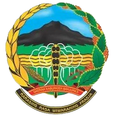
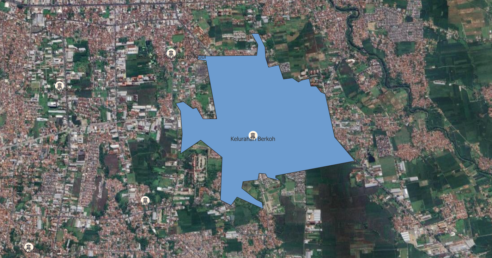
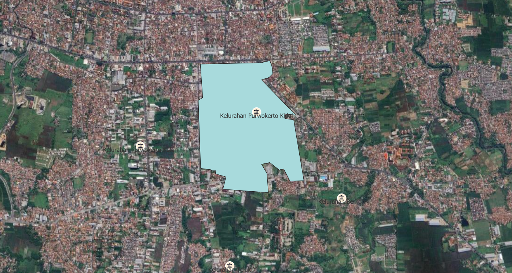
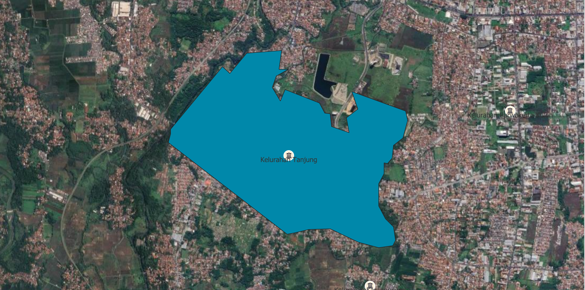
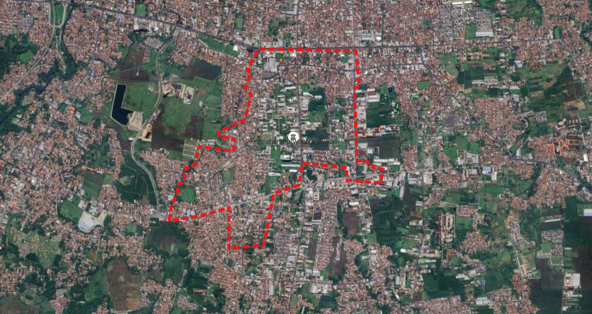
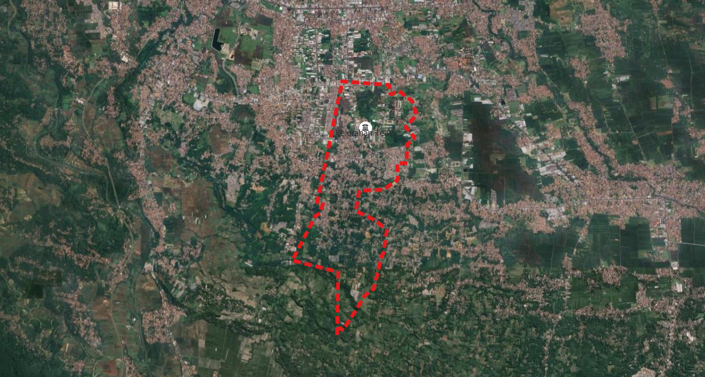
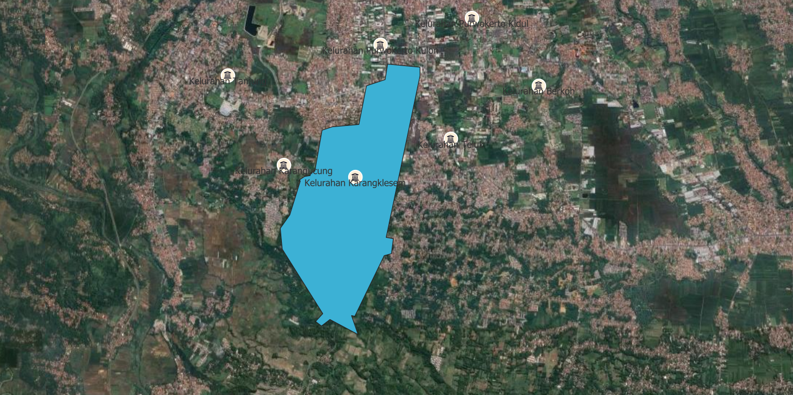
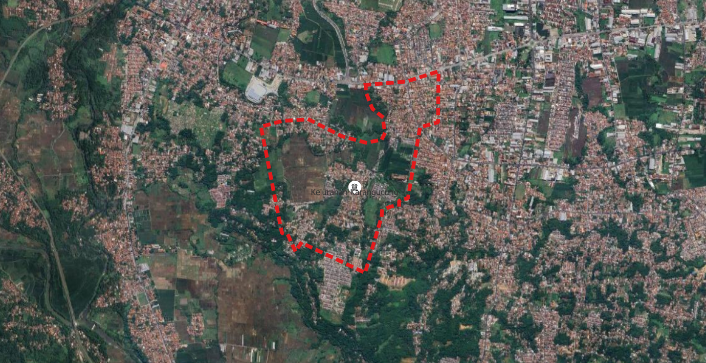

Peta Kecamatan Purwokerto Selatan
Visualisasi lengkap wilayah beserta 7 desa di dalamnya

Visualisasi lengkap wilayah beserta 7 desa di dalamnya
2.145 Hektar
± 85.000 jiwa
Desa Purwokerto Kulon
Wilayah Administratif
Provinsi, Kabupaten, Kecamatan
Jaringan perairan
Data spasial lengkap
Wilayah Administratif
Provinsi, Kabupaten, Kecamatan
Jaringan perairan
Data spasial lengkap
Klik untuk melihat peta detail masing-masing desa
Taman Satria & Kawasan Pendidikan

Kawasan pendidikan dan permukiman padat
Permukiman & Aktivitas Sosial

Pusat aktivitas masyarakat
Permukiman & Perkantoran Lokal

Permukiman dan perkantoran
Pusat Pemerintahan Kabupaten

Pusat pemerintahan Banyumas
Taman Andhang & Bukit Cinta

Wisata dan ruang hijau
Area Perbukitan

Perbukitan dengan panorama alam
Pertanian & Perbukitan

Kawasan pertanian dan perbukitan